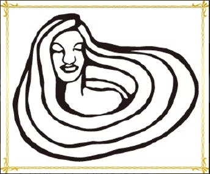
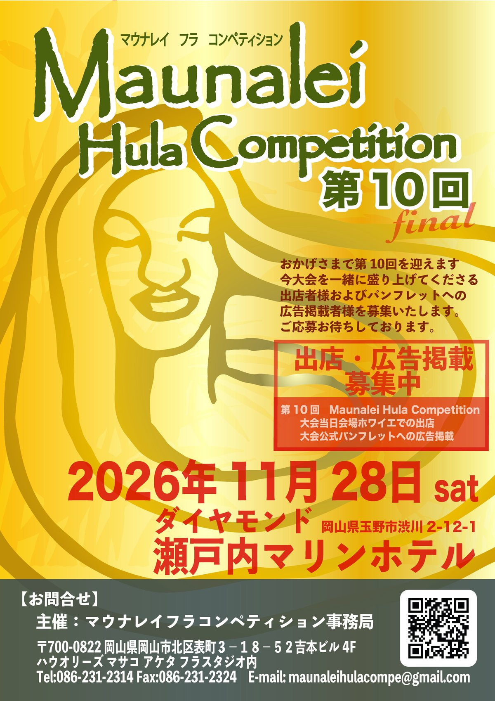

10回分の感謝を、一生心に残る舞台へ。


第10回を迎えるMaunalei Hula Competition。今回がファイナルとなります。
フラを愛する皆さまが輝き、つながる一日を目指します。
詳しい内容と申込方法は各ページでご確認ください。
Maunaleiの舞台で、日頃の成果とフラへの想いを届けてください。
レイと写真、それぞれの表現を募集します。
大会を一緒に盛り上げてくださる皆さまを募集します。
LINEからでもお問い合わせ可能です。